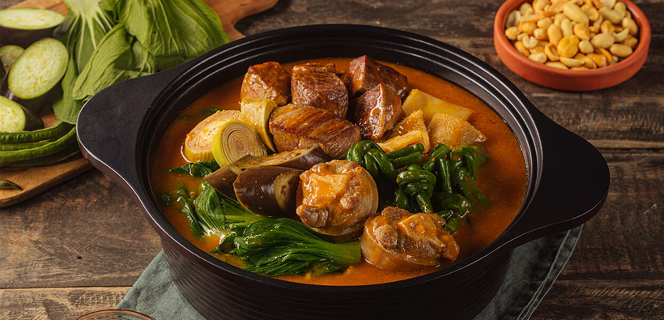

Main Ingredients
- Protein: Oxtail (buntot ng baka), pork hocks (pata), tripe (tuwalya), or beef shank
- Vegetables: Banana heart (puso ng saging), string beans (sitaw), eggplant (talong), and bok choy (pechay)
Sauce
- Ground peanuts or peanut butter
- Ground toasted rice (for thickening)
- Annatto seeds (for coloring)
- Garlic and onions
Preparation
- Boiling the Protein: Boil the protein (oxtail, pork hocks, etc.) until tender. Save the flavorful broth for later use.
- Preparing the Annatto Water: Soak annatto seeds in water to extract a reddish-orange color for the dish.
- Sautéing: Sauté garlic and onions in a pan until fragrant. Add the boiled protein and mix well.
- Making the Sauce: Combine peanut butter or ground peanuts with the broth. Thicken with ground toasted rice to create a creamy sauce.
- Adding Vegetables: Add banana heart, string beans, and eggplant. Cook until the vegetables are tender.
- Combining Everything: Mix the sautéed ingredients with the peanut sauce and simmer until flavors meld together.
- Final Touches: Add bok choy just before serving to maintain its crisp texture and bright color.
